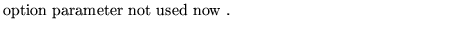
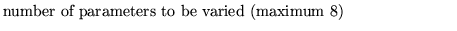

Next: Layout printing of machine
Up: Use and description of
Previous: Hardware values listing of
This operation enables to vary parameters of chosen elements while
observing the beam at an end point. The beam has to be defined in a
previous BEAM operation and a previous GENERATION of particles. The
beam can be observed in a printer-plot or by its statistical
parameters. The particles are tracked individually in each element.
This operation is not fully developped and debugged!
At run time follow the instructions of the program. This
operation WILL NOT work correctly
if at implementation of the program the output channel 9 has NOT
been assigned to the terminal.
Various versions of this operations exist. Interested users should
contact David Douglas or Matt Bickley at CEBAF.
Input format
INTEractive control of ..(up to 80 char)
niopt nivar
name keyword (repeated nivar times)
Parameter definitions
niopt

nivar

Dobrin Kaltchev
2004-10-20